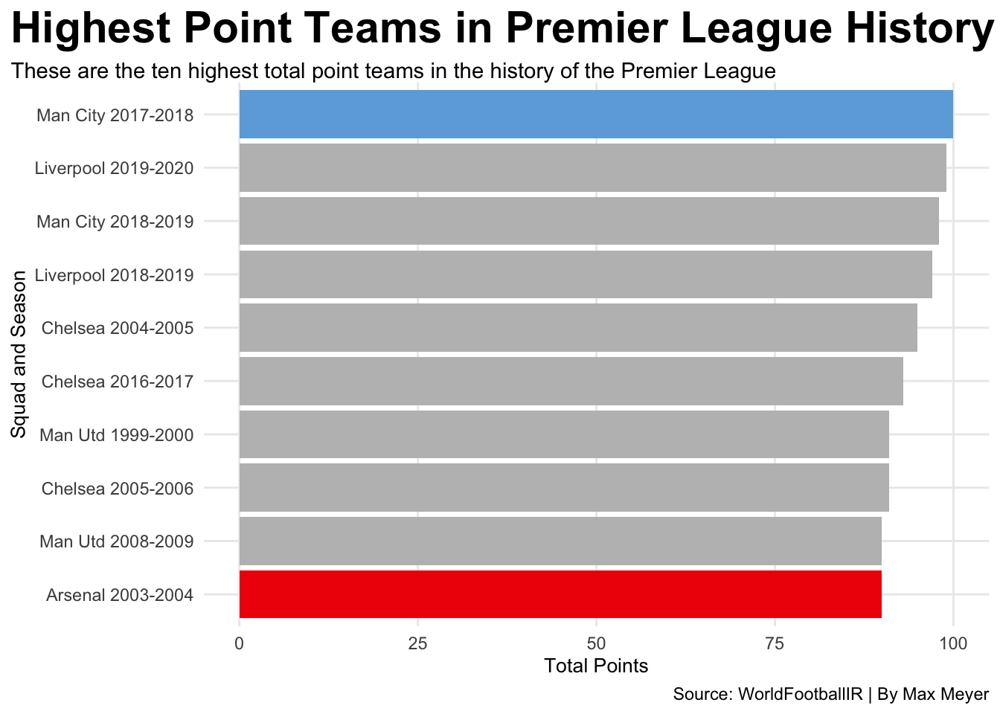
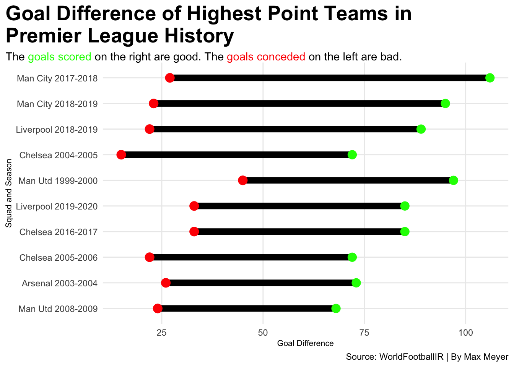
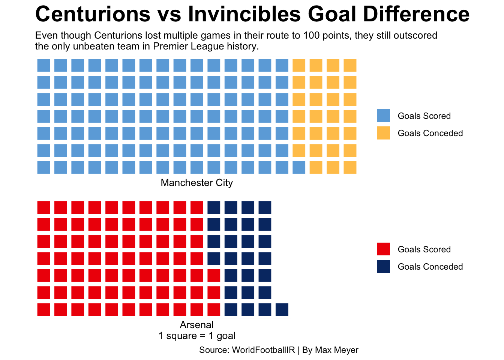

There have been seven different winners since the Premier League became official in 1992, formerly referred to as the top tier of English soccer. There have been many different teams of various skill levels to have win the title, such as the Arsenal Invincibles and the underdogs of Leicester City.
However, in the history of English soccer, only one team has been able to reach a total of 100 points in a singular season. Manchester City in the 2017-2018 season, on the final matchday of the season, defeated Bournemouth in the final minutes to become the first and currently only team to score 100 points in a season.
Even though they are the only team that has achieved this milestone, some do not consider them the best team in league history. Below is a chart of the ten highest total point teams in the history of the Premier League, with the Manchester City Centurions’ team and the Arsenal Invincibles’ team selected.
Code
library(tidyverse)library(worldfootballR)library(waffle)library(ggalt)library(ggtext)season1718 <-tm_matchday_table(country_name="England", start_year="2017", matchday=38) |>mutate(Season ="2017-2018")season1920 <-tm_matchday_table(country_name="England", start_year="2019", matchday=38) |>mutate(Season ="2019-2020")season1819 <-tm_matchday_table(country_name="England", start_year="2018", matchday=38) |>mutate(Season ="2018-2019")season0405 <-tm_matchday_table(country_name="England", start_year="2004", matchday=38) |>mutate(Season ="2004-2005")season1617 <-tm_matchday_table(country_name="England", start_year="2016", matchday=38) |>mutate(Season ="2016-2017")season9900 <-tm_matchday_table(country_name="England", start_year="1999", matchday=38) |>mutate(Season ="1999-2000")season0506 <-tm_matchday_table(country_name="England", start_year="2005", matchday=38) |>mutate(Season ="2005-2006")season0304 <-tm_matchday_table(country_name="England", start_year="2003", matchday=38) |>mutate(Season ="2003-2004")season0809 <-tm_matchday_table(country_name="England", start_year="2008", matchday=38) |>mutate(Season ="2008-2009")tables <-bind_rows(season1718, season1819, season1920, season9900, season0809, season0304, season0506, season1617, season0405) |>mutate(squadseason =paste(squad, Season))bestever <- tables |>filter(pts >89) |>arrange(desc(pts))mc <- season1718 |>filter(pts >99) |>mutate(squadseason =paste(squad, Season))ar <- season0304 |>filter(pts >89) |>mutate(squadseason =paste(squad, Season))ggplot() +geom_bar(data=bestever, aes(x=reorder(squadseason, pts), weight=pts), fill ="grey") +geom_bar(data=mc, aes(x=reorder(squadseason, pts), weight=pts), fill ="#6CABDD") +geom_bar(data=ar, aes(x=reorder(squadseason, pts), weight=pts), fill ="#EF0107") +coord_flip() +theme_minimal() +labs(title="Highest Point Teams in Premier League History", subtitle ="These are the ten highest total point teams in the history of the Premier League",x="Squad and Season", y="Total Points", caption="Source: WorldFootballIR | By Max Meyer" ) +theme(plot.subtitle =element_textbox_simple(),plot.title =element_text(size =22, face ="bold"),axis.title =element_text(size =10), panel.grid.minor =element_blank(),plot.title.position ="plot" )

When putting the best teams in a table, I found that the Invincibles were only the 10th highest point total team in Premier League history, even though they never lost a match. Manchester team just edges out the 2018-2019 Liverpool squad who almost matched the Centurions, but ended the season with 99 points.
When considering who the best teams ever are, it is important to think of two key factors: how much can they score and how little can their opponents score.
Below is a dumbbell chart comparing the goals scored and goals conceded by each of the ten highest point teams in league history, with the bold line showcasing the goal diffence.
Code
ggplot() +geom_dumbbell(data=bestever, aes(y=reorder(squadseason, g_diff), x=gf, xend=ga),size =3,colour ="black",colour_x ="green",colour_xend ="red") +labs(title="Goal Difference of Highest Point Teams in \nPremier League History", subtitle ="The <span style = 'color:green;'>goals scored</span> on the right are good. The <span style = 'color:red;'>goals conceded</span> on the left are bad.",x="Goal Difference", y="Squad and Season", caption="Source: WorldFootballIR | By Max Meyer" ) +theme_minimal() +theme(plot.subtitle =element_textbox_simple(),plot.title =element_text(size =20, face ="bold"),axis.title =element_text(size =8), panel.grid.minor =element_blank(),plot.title.position ="plot" )

Unsurprisingly, the Centurions have the highest goal difference on this list. Even though they may have not been the best defensive team ever, they knew how to score goals, which helped them in their historic season.
Let’s focus on the two teams that are regarded as two of the best ever, Arsenal and Manchester City. More specifically, their historic season, the Invincibles and the Centurions. Do you value the goals or the wins? Actually, the Centurions win both categories, where they won six more games, but they did lose twice, and they massively outscored the Gunners.
In their season, they scored 106 goals while only allowing 27, which is one more than the Invincibles allowed in their season where they only scored 73 and conceded 26. Below is a waffle chart showcasing the goal difference between these two squads in a visual manner.
Code
mcgd <-c("Goals Scored"=106, "Goals Conceded"=27)argd <-c("Goals Scored"=73, "Goals Conceded"=26, 34)iron(waffle( mcgd, rows =7, colors =c("#6CABDD", "#FFC659")) +labs(x="Manchester City",title="Centurions vs Invincibles Goal Difference", subtitle="Even though Centurions lost multiple games in their route to 100 points, they still outscored \nthe only unbeaten team in Premier League history.") +theme(plot.title =element_text(size =22, face ="bold"),plot.subtitle =element_text(size =10),axis.title =element_text(size =14),axis.title.y =element_blank() ),waffle( argd, rows =7, colors =c("#EF0107", "#063672", "white")) +labs(x ="Arsenal\n1 square = 1 goal",caption="Source: WorldFootballIR | By Max Meyer" ))

Although some value the factor of not losing a single match, I value the amount of goals scored and the total victories that the Centurions had over the Invincibles. Even though Manchester City did lose matches, they still are the only team to put up triple digits in the point column in a season and are one only five teams to score 100 goals in a single season, in which they hold the record with 106.
The Invincibles are regarded as one of the best teams to ever play the beautiful game, but the Centurions perfected it and showcased that they were the best team in the history of the Premier League.